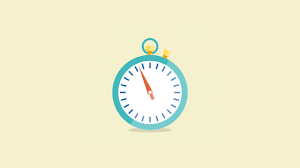
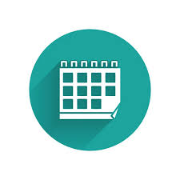

Understand your cycle and feel your best
If you want to know more about your body and how your cycle can affect everything from your mood to your energy levels, tracking your periods and ovulation is a great place to start.
READ MORENew
Menstruation Tracking 101
Everything you need to know about your cyclePlanning for Pregnancy
Ready to have a baby? Trying to conceive can be a journey. Here's your guide to preparing your body for pregnancyMenopause & Pregnancy : What Should you Know
It’s important to understand this transitional time of life.

01
Set cycle-related reminders
Schedule reminders for when your period is starting and when you're ovulating so you're always prepared.

02
Know when your period starts and when
Easily track your period, view future cycles and understand
your fertile days with Flo’s Artificial Intelligence engine.